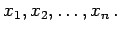
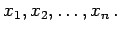

Inhalt Index DeskTop Bronstein

 Funktionen und ihre Darstellung Funktionen von mehreren Veränderlichen Definition und Darstellung Darstellungen
Funktionen und ihre Darstellung Funktionen von mehreren Veränderlichen Definition und Darstellung Darstellungen


Das Wertesystem eines Arguments aus zwei Variablen x und y kann als Punkt der Ebene mit den kartesischen Koordinaten x und y dargestellt werden; einem Wertesystem aus drei Variablen x,y,z entspricht ein Punkt mit drei kartesischen Koordinaten x,y,z im dreidimensionalen Raum. Systeme aus vier und mehr Koordinaten kann man sich nicht mehr anschaulich vorstellen. In Analogie zum dreidimensionalen Raum spricht man aber bei Systemen aus n Variablen  von einem Punkt im n-dimensionalen Raum mit den kartesischen Koordinaten  In dem im vorigen Abschnitt betrachteten Beispiel B mit vier Variablen ist das Wertesystem ein Punkt im vierdimensionalen Raum mit den Koordinaten x=3,y=4,z=3 und t=1.
von einem Punkt im n-dimensionalen Raum mit den kartesischen Koordinaten  In dem im vorigen Abschnitt betrachteten Beispiel B mit vier Variablen ist das Wertesystem ein Punkt im vierdimensionalen Raum mit den Koordinaten x=3,y=4,z=3 und t=1.